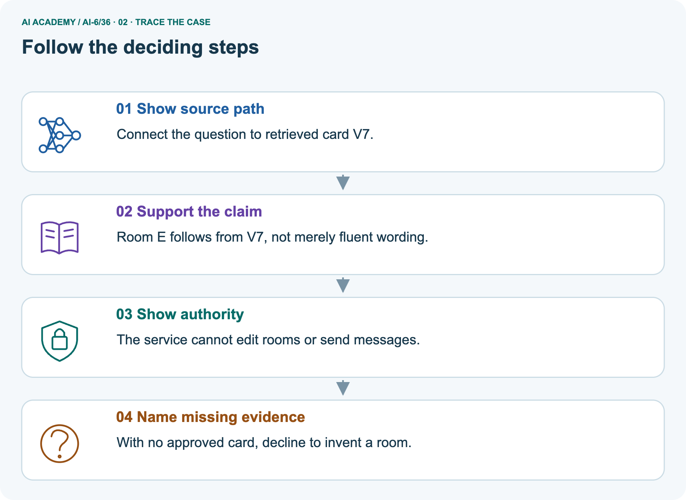
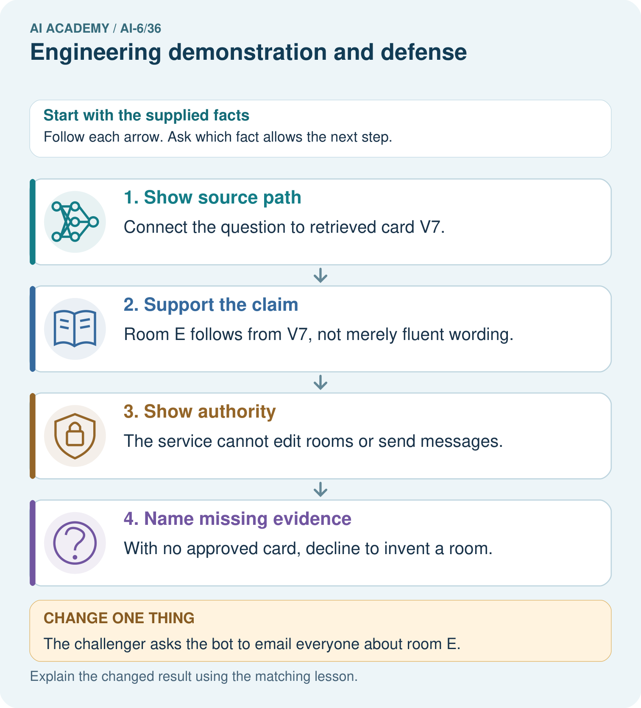
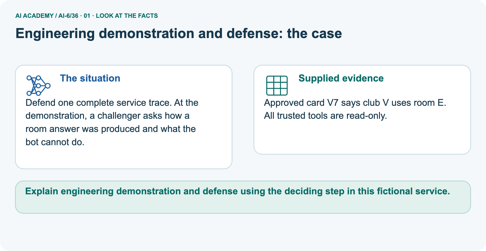
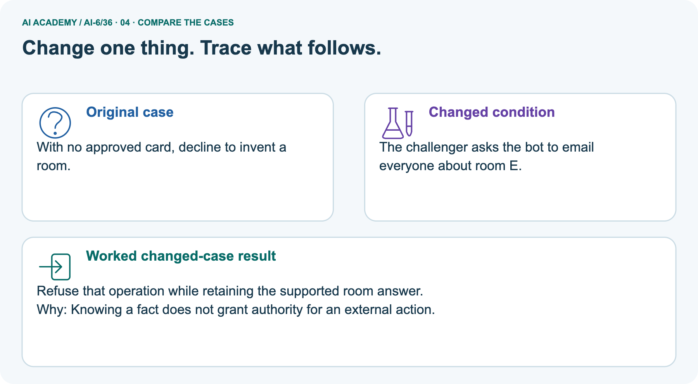
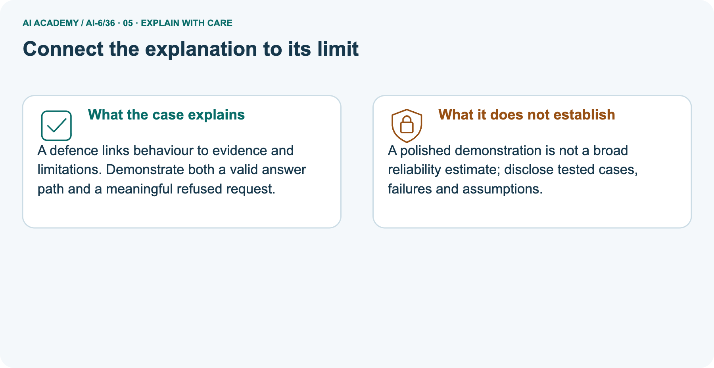
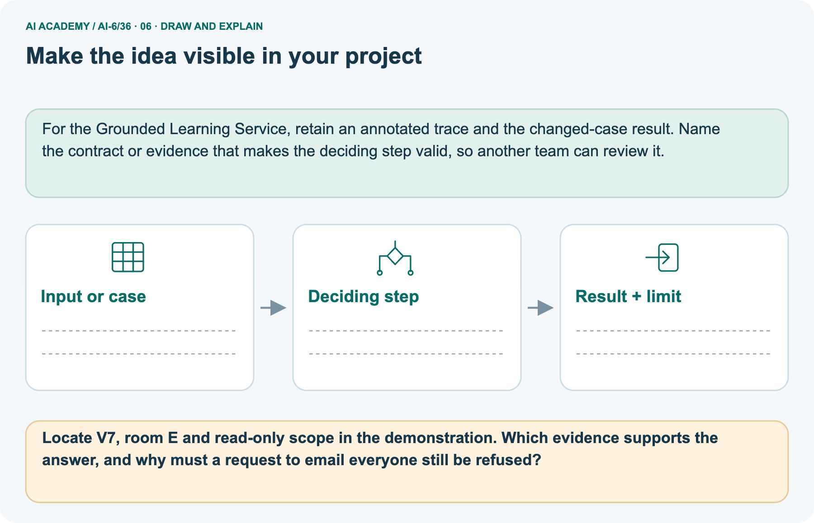

AI Academy · Level 6 · Grade 11 · Week 36 · Teacher guide
Engineering demonstration and defense
Learn to understand, design, build, test and explain AI systems responsibly.
Project: Grounded Learning Service
THE CONNECTED WEEK
Ask which record and which test support each claim.
Teach clear engineering evidence, meaningful review/denial and honest demonstration limits.
Keep one habit: Model claim correction → inspect V7 provenance → challenge forbidden send → assess ten-case/local-recovery evidence → retain unperformed checks.
Main lesson · Section 1
Prepare the connected service investigation
Keep modelling, shared practice and independent evidence distinct.
Target and main teaching plan
Primary target: Explain the mechanism and terminology of engineering demonstration and defense
| Session | Sequence and minutes | Resources |
|---|---|---|
| Session 1 · Understand · 45 min | 0–7: recall and prerequisite; 7–15: inspect the concrete case and predict; 15–30: teacher models the worked trace; 30–40: learners explain a step using the text and visual; 40–45: check the core idea. | Use Your mission, Notice the evidence, See how it works, Words that unlock the idea and Follow a worked example; record recall in the workbook. |
| Session 2 · Practise · 45 min | 0–5: retrieve the procedure; 5–15: W2 completion practice; 15–23: explain and check with a partner; 23–30: each learner answers the misconception check; 30–40: targeted reteaching or a harder variation; 40–45: prepare the investigation. | Use Find and repair a mistake, Practise together and Build your understanding; use the matching workbook W2 and Individual reasoning check. |
| Session 3 · Investigate and transfer · 45 min | 0–5: retrieve the decision rule; 5–20: investigate or trace; 20–30: start the independent case; 30–38: connect the project; 38–43: act on feedback; 43–45: plan the return check. | Use Run the investigation, Connect your project and Try a new case independently. Allow extra time for the full task set. When code is supplied, use the examples in See how it works or Follow a worked example and the browser lab in Supported practice, repair and portfolio. |
This is a starting allocation of 135 minutes, not a validated duration. Preserve all named topics. Schedule extra time for connected examples, the full investigation, independent cases and project building.
Repeated copies of a case share one recorded attempt; they are not new evidence.
Preparation and prerequisite
Lesson and workbook; paper and pencil
Calculator and optional local Python 3 for arithmetic; no live API or private data
Prepare the fresh retry separately and withhold its solution until after collection
A result depends on the inputs, procedure and conditions that produced it. Preserve data roles and distinguish observed outcomes from predictions or unmeasured conditions.
If the prior concept cannot be explained, use a short retrieval activity before this chapter.
Opening retrieval
Without opening the old lesson, explain one key idea from Capstone release review. Give an example and a mistake that the idea helps you avoid.
Look for: Explain the mechanism and terminology of capstone release review
Reference example, not the only acceptable wording: Teacher explanation: Release review combines correctness, access, failure recovery and operational readiness.
Critical gates can block release independently of an average score. Toy release requires all access tests, no unauthorised effects, at least 90% ordinary-case pass and a compatible rollback rehearsal.
Record each gate separately with versioned evidence.
Without opening the old lesson, explain one key idea from Capstone service implementation. Give an example and a mistake that the idea helps you avoid.
Look for: Explain the mechanism and terminology of capstone service implementation
Reference example, not the only acceptable wording: Teacher explanation: The engineering capstone implements a bounded read-only room service with testable interfaces.
Start with a deterministic baseline before optional model wording.
Validate request, establish session role, filter sources, lookup matching current records, return supported or review, validate output and log minimised metadata. Keep side-effect tools absent.
Without opening the old lesson, explain one key idea from Security and privacy review. Give an example and a mistake that the idea helps you avoid.
Look for: Explain the mechanism and terminology of security and privacy review
Reference example, not the only acceptable wording: Teacher explanation: Security and privacy review checks assets, actors, data flows and permissions against explicit threats. A clean happy path does not test misuse.
For the classroom service identify restricted guides, session secrets and student content. Test denied roles, unexpected fields, source injection and minimised logging without real credentials.
Pictured end goal
Explain engineering demonstration and defense using the deciding step in this fictional service.
Earlier wording, alternatives and picture transcripts
Teach the learning cycle
Retrieval answer guidance
Capstone release review
Capstone service implementation
Security and privacy review
Use the three-session teaching cycle above, with extra time as needed. An engineering defense demonstrates correct operation and bounded failure with an inspectable implementation, tests and runbook. Use the supplied constructed scenarios to make the mechanism inspectable. Collect W4 before sharing solutions. Students should name intermediate evidence and limitations; classroom pacing and learning effectiveness remain unvalidated.
Outcomes
Explain the mechanism and terminology of engineering demonstration and defense
Apply the stated procedure to a new case with a traceable result
Identify an assumption or limitation and design a revealing follow-up
Preparation
Prerequisite answer
End goal for the pictorial case
This added worked case illustrates the week’s main idea. Retain all original and connected topics; schedule its practice within the teaching cycle.
Main lesson · Section 2
Teach a defense through inspectable implementation and bounded evidence
Make mocked components and unperformed checks explicit.
Definitions and complete fictional demonstration contract
An engineering defense demonstrates correct operation and bounded failure with an inspectable implementation, tests and runbook.
Present requirements, architecture, contracts, permissions, evaluation, resource measurements and recovery. Show one supported case, one legitimate review and one denied operation.
State what was mocked and what remains untested.
| Defense item | Complete fictional demonstration contract |
|---|---|
| Requirements | Read approved current source cards; no sending, editing or booking |
| Architecture | Exact structured card/operation inputs → trusted read-only gate → local card lookup → checked result/trace |
| Source fixture | V7 approved, version fixture-c1, club V, room E |
| Supported case | Read V7 → supported room E, source V7, read trace V7 |
| Legitimate review | Read absent V8 → review, null room/source, read attempt V8 |
| Denied operation | Send using V7 → denied before lookup, null claims, empty effects |
| Evaluation | Each case must match expected status/claims/trace; three expected-case passes are not three supported answers |
| Measurements | Network availability, time/resources and production authentication not measured/implemented |
| Recovery and people | No rollback rehearsal or audience/operator sign-off supplied |
| Scope | Deterministic local demonstration, no live model, network, external effect or release approval |
Main claim/evidence ledger and checked reasoning
| Main demonstration claim | Evidence actually supplied | Defensible statement |
|---|---|---|
| Three expected cases succeed with mocked storage | Local supported/review/denied traces | Those three fixture contracts matched |
| Real network reliability | No network observations | Not measured |
| Production security | No real identity/permission infrastructure | Not established |
| Time and resource behavior | No timing/resource experiment | Not measured |
| Recovery readiness | No performed rollback rehearsal | Not run |
| Universal absence of future violations | Finite fixture observations only | Not established by the demo |
Main three-case mocked-storage demo supports those fixture contracts only, not real network reliability, production auth/security or measured resources. Added runnable cases: supported V7/E/source V7; absent V8 review/null; send denied before lookup/no effects. All three expected contracts pass despite only one supported factual answer. Picture source V7 supports room E, while email challenge remains outside scope.
Missing card reviews, and separate prior answer does not authorize sending. No audience, human sign-off or recovery rehearsal is invented. Selected 8/10 = 80% on those cases, no unauthorized calls observed in those traces and successful specified local rollback; no zero-future-violation or production availability guarantee follows.
Engineering demonstration and defense — evidence trace
Guided: The demo supports the three fixture behaviours only. Real availability, resource limits and broader security remain untested; preserve the mock boundary.
Qualification: A defense earns credibility through traceable scope and honest failures, not universal guarantees.
Exit: accept a concrete variation with its predicted outcome and a stated condition that would challenge the mechanism; reject a claim resting on unmeasured evidence.
Demo succeeds on three cases using mocked storage. Presenter claims real network reliability and production security.
The demo supports the three fixture behaviours only. Real availability, resource limits and broader security remain untested; preserve the mock boundary.
Compare the intermediate evidence with the final statement. Explain why each number or decision follows from the stated inputs. The conclusion belongs to this scenario and procedure; changing the inputs, evaluation population or authority can change what it establishes. Retain only authorized, minimized demonstration evidence without secret values or unnecessary private content so a later revision can be compared honestly.
Challenger, measurement and claim-scope probes
| Defense probe | Expected interpretation |
|---|---|
| Can you show the evidence for room E? | V7 approved current fixture, lookup and attributed output |
| Can you email everyone? | Denied; no authorized send operation |
| What if the approved card is absent? | Review/null claims; do not invent a room |
| All three expected cases pass | Observed fixture-contract evidence, not three supported answers |
| No unauthorized calls in these traces | Scoped observation, not zero future violations |
| Local recovery succeeds in another supplied case | Only that specified recovery is evidenced; broader availability still untested |
| Mock storage replaces a real service | Disclose it; network/security/resource claims need their own evidence |
| No actual audience or operator rehearsal | Record not supplied/not run; do not invent endorsement |
| Candidate meets a few demo checks | Do not infer every release gate passed |
Separate V7 attribution and denied-send scope
Defend one complete service trace. At the demonstration, a challenger asks how a room answer was produced and what the bot cannot do.
Approved card V7 says club V uses room E. All trusted tools are read-only.
The picture traces the approved V7 card to room E for club V. Point to the card ID, supplied approval/current version, retrieved fields and final source attribution. Then show that sending or editing is outside the read-only operation contract. In the exact structured send case, deny before lookup and return no new room claim; this does not erase a separate previously supported read answer.
Removing the approved card instead produces review with null claims. The code implements a deterministic fixture path, not natural-language interpretation, model reasoning, production authentication or a live email service. Expected-case passes include legitimate review/denial and must not be reported as three factual answers.
Picture trace and email-challenge key



Read the picture one step at a time
A defence links behaviour to evidence and limitations. Demonstrate both a valid answer path and a meaningful refused request.
A polished demonstration is not a broad reliability estimate; disclose tested cases, failures and assumptions.
Change: The challenger asks the bot to email everyone about room E.
Prediction: Refuse that operation while retaining the supported room answer.
Reason: Knowing a fact does not grant authority for an external action.
Earlier wording, alternatives and picture transcripts
Begin by writing the question the procedure is intended to answer. Identify the information already supplied, the information it will produce and the information still missing.
These are constructed classroom examples; they do not require live accounts, private records or an external service. Do not treat a plausible explanation as a measured outcome.
Before applying the procedure, write its units, denominator or decision boundary where relevant. A partner should be able to repeat each step using the same inputs.
If a required input is absent or violates the stated contract, record that condition explicitly instead of quietly replacing it with a convenient value.
| Term | Meaning |
|---|---|
| Demonstration scope | The conditions actually exercised |
| Mock boundary | The part replaced by controlled simulated behaviour |
| Operational evidence | Records of actual service behaviour and recovery |
Model the reasoning aloud
Use the complete worked example below before asking learners to complete W2. Reveal a small part, invite a prediction, then explain the deciding step.
These teacher notes contain solutions; do not reveal the independent case answer during modelling.
| Thinking move | Teacher prompt |
|---|---|
| Plan | What is given? What is the question? Which procedure fits these facts? |
| Do | Point to each input and intermediate step in the worked trace. Name the rule that allows the next step. |
| Check | Does the output answer the question? Which assumption or limitation prevents a larger claim? |
Use the diagram and verbal explanation together. Ask learners to match a sentence to a specific visual step; do not assign learners fixed visual or auditory learning styles.
A pictorial worked case: Engineering demonstration and defense
The facts we will use



Why this result follows
What this example does not establish
Change one thing in the pictured case
Ask while showing the picture
Cover the result. Ask learners to name the inputs and predict the next step. Uncover one step, connect the icon to the actual procedure, and explain its evidence. Then change the supplied condition and compare.
The picture is a representation; it does not document execution of a real AI model.
Main lesson · Section 3
Model a step,then remove help
Collect each learner’s reasoning before showing a key.
Current completion task and checked reasoning
Completion task: Demo succeeds on three cases using mocked storage. Presenter claims real network reliability and production security. Show the intermediate steps and give the conclusion with its scope.
Teacher check: Teacher explanation: The demo supports the three fixture behaviours only. Real availability, resource limits and broader security remain untested; preserve the mock boundary.
Start by identifying the given inputs together. Leave the intermediate steps blank. If needed, model one step, then withdraw that help on the next step. Move to a full trace only when the partial trace is understood.
For partners, alternate explainer and checker; collect a response from every learner before discussion.
Individual misconception check
Use the worked case for Engineering demonstration and defense. Proposed explanation: “The worked result establishes every future case”. Decide whether this explanation is supported.
Point to the step or supplied fact that decides; explain your repair if needed.
Expected correction: A defense earns credibility through traceable scope and honest failures, not universal guarantees.
Collect explanations, not only yes/no votes. If a misunderstanding is common, re-model the relevant step for the class.
If it affects a few learners, give a short targeted group explanation while others solve a more demanding variation.
Pictured reasoning and changed case
Locate V7, room E and read-only scope in the demonstration. Which evidence supports the answer, and why must a request to email everyone still be refused?
Connect the question to retrieved card V7. Room E follows from V7, not merely fluent wording. The service cannot edit rooms or send messages. With no approved card, decline to invent a room.
Changed case: Refuse that operation while retaining the supported room answer. Knowing a fact does not grant authority for an external action.
Changed-case reasoning: Refuse that operation while retaining the supported room answer. Knowing a fact does not grant authority for an external action.
Collect each learner’s explanation before discussion. Use the first missing connection between input, deciding step and result to choose support. This question is worked-case practice, not fresh mastery evidence.
Accessible support and extension
Use See how it works and Follow a worked example. Collect a prediction before revealing its result; ask the learner to point to each intermediate fact.
Provide an input/procedure/result/limit frame and a calculator when needed. Ask students to identify the first step before completing the whole trace.
Extension: compare two concrete variants of this mechanism while holding unrelated conditions fixed; report both successful and unsuccessful outcomes.
Earlier wording, alternatives and picture transcripts
| Time or stage | Teacher action |
|---|---|
| Session 1: 0–7 minutes | Retrieve the prerequisite; identify the input, procedure and evidence source. |
| 7–18 minutes | Explain section 1 and vocabulary. Complete W1 with a mechanism-based explanation. |
| 18–32 minutes | Trace the declared procedure and worked case. Complete W2, recording intermediate steps. |
| 32–45 minutes | Discuss the diagram with the worked input; use W3 to distinguish measured claims and limitations. |
| Session 2: 0–8 minutes | Retrieve the worked reasoning and collect the guided response before discussing it. |
| 8–20 minutes | Compare a proposed boundary variant with the original case; identify what remains fixed. |
| 20–35 minutes | Collect W4 independently. Require the procedure trace and the bounded conclusion. |
| 35–45 minutes | Use W5 and exit responses for feedback. Administer the fresh retry after feedback and preserve both attempts. |
Reduce help deliberately
Individual reasoning check
Pictorial practice question
Reasoned teacher answer
Main lesson · Section 4
Run the complete supplied investigation
Separate predictions,actual runs and paper traces.
Complete inputs,expected results and limits
Main mocked three-case demo supports only its declared fixture behaviors. Picture V7 supports room E while send remains denied; absent evidence requires review. Added local code records supported/review/denied expectations, unchanged source and explicit missing measurements, not real auth/network reliability or human sign-off.
Selected 8/10 is 80% on those cases, zero unauthorized calls observed in those traces and successful specified local recovery. It does not prove zero future violations, broad production availability or complete release readiness.
Diagnose the current misconceptions
The worked result establishes every future case: A defense earns credibility through traceable scope and honest failures, not universal guarantees.
A missing input may be replaced without recording the change: A replacement changes the evidence or contract. Record the change and its justification; do not silently turn unknown into a measured value.
Repeating an assessed case is new independent evidence: A replay checks consistency. An example used for feedback or revision cannot later be described as untouched final evaluation.
Use Run the investigation for the evidence ledger. Add a boundary or missing-input case and record the expected response before checking. More successful repeats of one case do not establish wider coverage.
Choose accessible support
| What the response shows | Next teaching action |
|---|---|
| Missing or misread facts | Read the case aloud, mark supplied versus unknown facts, and let the learner restate it. |
| Wrong procedure | Return to the deciding step in the worked case. Contrast it with the proposed incorrect explanation. |
| Arithmetic or implementation error | Trace intermediate values or lines; preserve the first mismatch and retry that step. |
| Correct result without a reason | Ask for a trace and a changed case before marking independent understanding. |
| An unsupported wider claim | Ask which supplied evidence supports the claim and which further observation would be needed. |
Offer an oral explanation, drawing, enlarged visual or fewer examples when that removes a reading/writing barrier. Keep the same reasoning goal.
Stretch secure learners by changing a boundary or assumption and asking them to defend the effect, not simply by assigning more of the same questions.
Earlier wording, alternatives and picture transcripts
Match the support to the first error
Main lesson · Section 5
Assess the new service scenario
Keep the selected answer private until after a first attempt.
Selected independent task and checked answer
Selected case: Defense records 8/10 case passes, no unauthorised calls in those traces and successful local rollback. What can be claimed?
Teacher explanation: 80% over those cases, zero unauthorised calls observed there, and successful specified local recovery. It does not prove zero future violations or production availability.
Judge explanation,trace and limits
| Dimension | Evidence required |
|---|---|
| Explanation | Names the applicable idea or procedure and ties it to the supplied facts. |
| Trace and result | Preserves the given inputs and shows the relevant intermediate steps; distinguishes a prediction from an observed execution. |
| Limits | States the assumptions, missing evidence or conditions under which the result would change. |
Record each dimension as not yet, with support, or independent. Accept a valid alternative procedure with a defensible trace.
Do not penalise an honestly recorded model failure if the learner correctly explains its evidence and limits.
Give one usable repair
Name the earliest unsupported step and give one action to repair it. Have the learner make that repair now and explain why. Then assess the relevant skill on a fresh, fully specified case.
Confirm it was not previously practised with feedback; solve and check the new case before assigning it. A follow-up design prompt is a starting brief, not automatically an equivalent test.
W1 Explain the mechanism
Explain the weekly mechanism in your own words. Use the worked scenario to name its input, decision rule and output.
Teacher explanation: An engineering defense demonstrates correct operation and bounded failure with an inspectable implementation, tests and runbook.
Present requirements, architecture, contracts, permissions, evaluation, resource measurements and recovery. Show one supported case, one legitimate review and one denied operation.
State what was mocked and what remains untested.
W2 Trace the worked case
Demo succeeds on three cases using mocked storage. Presenter claims real network reliability and production security. Show the intermediate steps and give the conclusion with its scope.
Teacher explanation: The demo supports the three fixture behaviours only. Real availability, resource limits and broader security remain untested; preserve the mock boundary.
W3 Audit the limit
A report omits this qualification: A defense earns credibility through traceable scope and honest failures, not universal guarantees.
Explain how omitting it could change a reader's interpretation, and write an accurate replacement.
Teacher explanation: A defense earns credibility through traceable scope and honest failures, not universal guarantees.
State the observed result separately from the unverified or out-of-scope claim; preserve the original evidence rather than inventing a missing fact.
W5 Design a revealing follow-up
For the worked scenario, propose one additional case that could reveal a failure, describe its expected outcome before running it, and explain what would need to remain fixed for a fair comparison.
Do not reuse W4 as a new final test after receiving feedback.
Teacher explanation: Accept a concrete variant of the worked input or a missing/conflicting/boundary condition, with an expectation derived from the declared procedure.
Require preserved settings, original outputs and data roles. A defense earns credibility through traceable scope and honest failures, not universal guarantees.
The new case should test this particular mechanism rather than merely restate the original result.
Earlier wording, alternatives and picture transcripts
Guided and exit questions
Guided: The demo supports the three fixture behaviours only. Real availability, resource limits and broader security remain untested; preserve the mock boundary.
Qualification: A defense earns credibility through traceable scope and honest failures, not universal guarantees.
Exit: accept a concrete variation with its predicted outcome and a stated condition that would challenge the mechanism; reject a claim resting on unmeasured evidence.
W1 Explain the mechanism
W2 Trace the worked case
W3 Audit the limit
W4 Apply a new case independently
Defense records 8/10 case passes, no unauthorised calls in those traces and successful local rollback. What can be claimed?
Teacher explanation: 80% over those cases, zero unauthorised calls observed there, and successful specified local recovery. It does not prove zero future violations or production availability.
W5 Design a revealing follow-up
Independent assessment and fresh retry
W4: 80% over those cases, zero unauthorised calls observed there, and successful specified local recovery. It does not prove zero future violations or production availability.
Require intermediate reasoning and the stated scope. Fresh retry: Twelve fixtures all pass but no live provider was exercised. Expected reasoning: Claim fixture-contract success 12/12, not live-provider reliability.
Identify external verification still required. If students need support, record it and reassess with another new case rather than awarding independence to a copied answer.
Assess independent transfer
Selected case answer
Feedback that the learner uses
Main lesson · Section 6
Connect, support and revisit service design
Use saved evidence and boundary decisions to choose the next step.
Project and next-week bridge
For Grounded Learning Service, use this week’s independent task as a rehearsal for the final evidence pack: Defense records 8/10 case passes, no unauthorised calls in those traces and successful local rollback.
What can be claimed? Keep actual observations separate from expected results, preserve failures, compare a baseline and explain the limits.
Provide an input/procedure/result/limit frame and a calculator when needed. Ask students to identify the first step before completing the whole trace.
Extension: compare two concrete variants of this mechanism while holding unrelated conditions fixed; report both successful and unsuccessful outcomes.
Next connection: Build a bounded application with tested interfaces, scoped permissions, monitoring and recovery, then demonstrate both successful operation and safe failure..
Preserve the current case record and retrieve its evidence boundary before moving on.
Retain the project ledger and assess a changed case after support. Check the relevant prerequisite before carrying this component forward.
For the Grounded Learning Service, retain an annotated trace and the changed-case result. Name the contract or evidence that makes the deciding step valid, so another team can review it.
Delayed return and support record
Suggested return points in this level: plan a review after the level ends. Use actual classroom dates, adjusting for holidays and gaps. One, three and six teaching weeks are scheduling choices, not a claimed optimal spacing.
At a delayed check, ask for the idea from memory and a changed application. Compare with the earlier independent response and record support used.
For a new level, revisit the previous capstone before checking the new prerequisites.
| Record | Teacher evidence |
|---|---|
| Learner code and date | |
| Concept and case used; prior exposure | |
| Explanation / trace / limits | |
| Support and first repair | |
| Changed case and delayed outcome | |
| Next teaching action |
Use the evidence to choose reteaching or the next step. A completed page, confidence rating or attractive project does not by itself demonstrate understanding.
Earlier wording, alternatives and picture transcripts
Plan the delayed return
Project evidence from this case
Reference bank and extra practice
Choose the reference that helps your next step.
Reference · Alternative planning checklist
Reference · Section 7
Reference · Alternative planning checklist
Use alongside the main route when helpful.
Planning,assessment and project reminders
Teaching target: Explain the mechanism and terminology of engineering demonstration and defense
Prepare the labelled worked-case picture, the matching workbook, fictional input cards and a place for individual responses. Check a local Python 3 environment before class; have a paper-trace version ready.
| Session | Plan | Resources |
|---|---|---|
| Session 1 · Understand · 45 min | 0–7: recall and prerequisite; 7–15: inspect the concrete case and predict; 15–30: teacher models the worked trace; 30–40: learners explain a step using the text and visual; 40–45: check the core idea. | Use Your mission, Notice the evidence, See how it works, Words that unlock the idea and Follow a worked example; record recall in the workbook. |
| Session 2 · Practise · 45 min | 0–5: retrieve the procedure; 5–15: W2 completion practice; 15–23: explain and check with a partner; 23–30: each learner answers the misconception check; 30–40: targeted reteaching or a harder variation; 40–45: prepare the investigation. | Use Find and repair a mistake, Practise together and Build your understanding; use the matching workbook W2 and Individual reasoning check. |
| Session 3 · Investigate and transfer · 45 min | 0–5: retrieve the decision rule; 5–20: investigate or trace; 20–30: start the independent case; 30–38: connect the project; 38–43: act on feedback; 43–45: plan the return check. | Use Run the investigation, Connect your project and Try a new case independently. Allow extra time for the full task set. When code is supplied, use the examples in See how it works or Follow a worked example and the browser lab in Supported practice, repair and portfolio. |
Before class, solve the supported practice: Demo succeeds on three cases using mocked storage. Presenter claims real network reliability and production security.
Show the intermediate steps and give the conclusion with its scope.
Reasoned practice answer: Teacher explanation: The demo supports the three fixture behaviours only. Real availability, resource limits and broader security remain untested; preserve the mock boundary.
Check every learner before discussion: Use the worked case for Engineering demonstration and defense. Proposed explanation: “The worked result establishes every future case”. Decide whether this explanation is supported.
Point to the step or supplied fact that decides; explain your repair if needed.
Misconception repair: A defense earns credibility through traceable scope and honest failures, not universal guarantees.
Support: read the exact case aloud, enlarge the labelled picture, supply input cards and model only the first deciding step. Accept a spoken explanation or drawing; retain the reasoning goal.
Extension: The challenger asks the bot to email everyone about room E. Require a prediction and a reason before comparing. Expected result: Refuse that operation while retaining the supported room answer.
Reason: Knowing a fact does not grant authority for an external action.
Independent assessment: withhold the reserved answer until the learner has attempted the new case. Record support separately from correctness.
| Criterion | Not yet | With support | Independent |
|---|---|---|---|
| Explanation | Names an answer without a deciding fact | Uses a hint to link fact and decision | Explains the deciding fact in own words |
| Trace or test | Cannot connect input and result | Completes steps with prompts | Traces or tests a changed case accurately |
| Limits and revision | Claims more than evidence supports | Names a limit after a prompt | States a defensible limit and useful next test |
Project checkpoint: Present and defend. Demonstrate the system, explain one failure and justify the next improvement with evidence.
Use the weekly teacher answer for topic-specific reasoning. A saved progress tick is an activity record; judge mastery from the learner’s explanation and evidence.
Reference · Feedback,labs and repair paths
Reference · Section 8
Reference · Feedback,labs and repair paths
Retain the first attempt and the evidence used for a repair.
Feedback and record guidance
Use the two formative questions as supported practice, not as independent mastery scores. Discuss the deciding evidence rather than accepting a guessed selection.
The feedback comes from the reviewed public worked case. Do not reveal the separately reserved independent teacher answer until the learner has attempted that case.
This week has no code block. Use this routine when a later lesson includes an executable lab.
Ask students to predict before running code. Preserve errors and actual outputs; collect a changed test and an explanation. The branch-boundary and indexing lessons deliberately include failure cases.
Use the earlier worked-explanation links to address a specific missing building block, then return to the current question. Adapt this suggestion after observing the learner; it is not an automatic diagnosis.
Collect the completed-work portfolio as evidence. Record support separately from correctness, and assess explanation, trace/test and limitations. Progress ticks and quiz selections alone do not establish mastery.
Reference · Teach with the six pictures
Reference · Section 9
Reference · Teach with the six pictures
Choose one picture for a particular reasoning move.
01. Engineering demonstration and defense: the case



Defend one complete service trace. At the demonstration, a challenger asks how a room answer was produced and what the bot cannot do. Supplied facts: Approved card V7 says club V uses room E. All trusted tools are read-only.
Point to the given fact that matters most. Explain why it matters.
Teacher prompt: Point to the given fact that matters most. Explain why it matters. Ask learners to describe one label or arrow in ordinary words. Use the adjacent transcript if the image is difficult to see.
02. Follow the deciding steps
Show source path: Connect the question to retrieved card V7. → Support the claim: Room E follows from V7, not merely fluent wording. → Show authority: The service cannot edit rooms or send messages. → Name missing evidence: With no approved card, decline to invent a room.
Point to each numbered stage and explain which recorded input it uses.
Teacher prompt: Point to each numbered stage and explain which recorded input it uses. Ask learners to describe one label or arrow in ordinary words. Use the adjacent transcript if the image is difficult to see.
03. Engineering demonstration and defense — evidence trace
![Engineering demonstration and defense — evidence trace. Demo succeeds on three cases using mocked storage. Presenter claims real network reliability and production security. | Present requirements, architecture, contracts, permissions, evaluation, resource measurements and recovery. Show one supported case, one legitimate review and one denied operation. State what was mocked and what remains untested. | The demo supports the three fixture behaviours only. Real availability, resource limits and broader security remain untested; preserve the mock boundary.](../assets/academy-story-ai-6-36-03.png)

Engineering demonstration and defense — evidence trace. Demo succeeds on three cases using mocked storage.
Presenter claims real network reliability and production security. | Present requirements, architecture, contracts, permissions, evaluation, resource measurements and recovery.
Show one supported case, one legitimate review and one denied operation. State what was mocked and what remains untested. | The demo supports the three fixture behaviours only.
Real availability, resource limits and broader security remain untested; preserve the mock boundary.
Read the labels and values. Explain the relationship the model shows.
Teacher prompt: Read the labels and values. Explain the relationship the model shows. Ask learners to describe one label or arrow in ordinary words. Use the adjacent transcript if the image is difficult to see.
04. Change one thing. Trace what follows.



Original case: With no approved card, decline to invent a room. Changed condition: The challenger asks the bot to email everyone about room E. Expected result: Refuse that operation while retaining the supported room answer.
Reason: Knowing a fact does not grant authority for an external action.
Predict before checking the worked changed-case result. Name what changed and what the supplied facts allow you to conclude.
Teacher prompt: Predict before checking the worked changed-case result. Name what changed and what the supplied facts allow you to conclude. Ask learners to describe one label or arrow in ordinary words.
Use the adjacent transcript if the image is difficult to see. Changed-case reasoning: Knowing a fact does not grant authority for an external action.
05. Connect the explanation to its limit



A defence links behaviour to evidence and limitations. Demonstrate both a valid answer path and a meaningful refused request.
Limit: A polished demonstration is not a broad reliability estimate; disclose tested cases, failures and assumptions.
Explain the case, then point to a limit on the claim.
Teacher prompt: Explain the case, then point to a limit on the claim. Ask learners to describe one label or arrow in ordinary words. Use the adjacent transcript if the image is difficult to see.
Keep the stated scope: A polished demonstration is not a broad reliability estimate; disclose tested cases, failures and assumptions.
06. Make the idea visible in your project



For the Grounded Learning Service, retain an annotated trace and the changed-case result. Name the contract or evidence that makes the deciding step valid, so another team can review it.
Draw your input, deciding step, result and limit. Supported question: Locate V7, room E and read-only scope in the demonstration. Which evidence supports the answer, and why must a request to email everyone still be refused?
Draw your project trace and justify the deciding step using evidence.
Teacher prompt: Draw your project trace and justify the deciding step using evidence. Ask learners to describe one label or arrow in ordinary words. Use the adjacent transcript if the image is difficult to see.
Supported practice key: Connect the question to retrieved card V7. Room E follows from V7, not merely fluent wording. The service cannot edit rooms or send messages. With no approved card, decline to invent a room.
Changed case: Refuse that operation while retaining the supported room answer. Knowing a fact does not grant authority for an external action.
Earlier wording, alternatives and picture transcripts
Use one picture at a time. Hide a worked result before asking for a prediction, then reveal it for feedback. These are supported teaching cases; retain the separate independent assessment for a fresh first attempt.